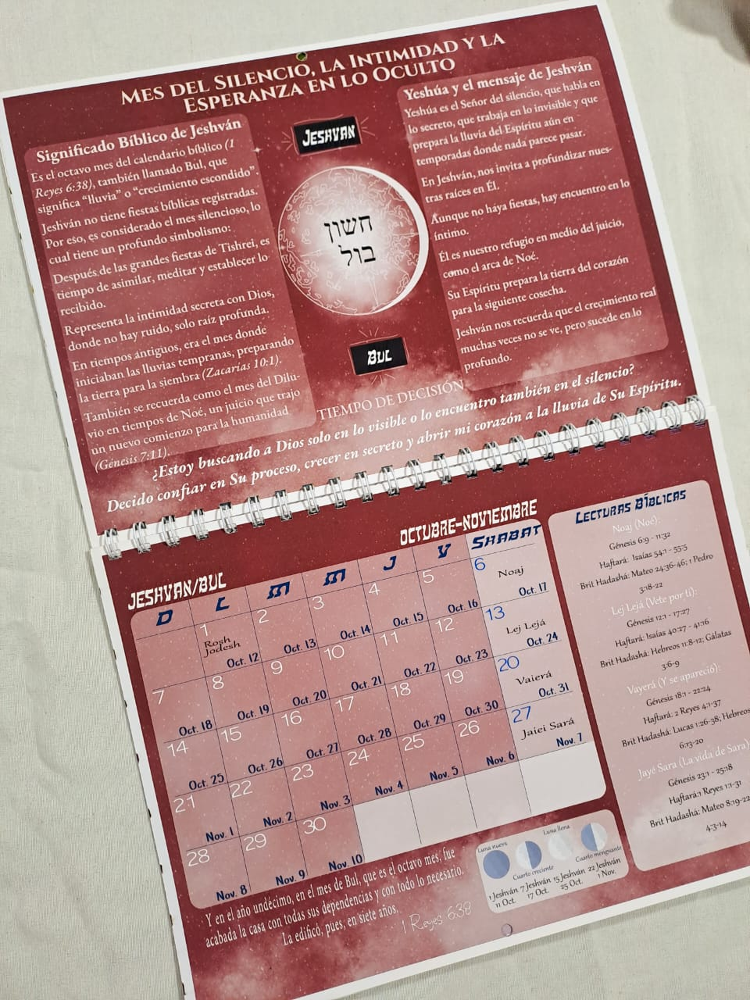
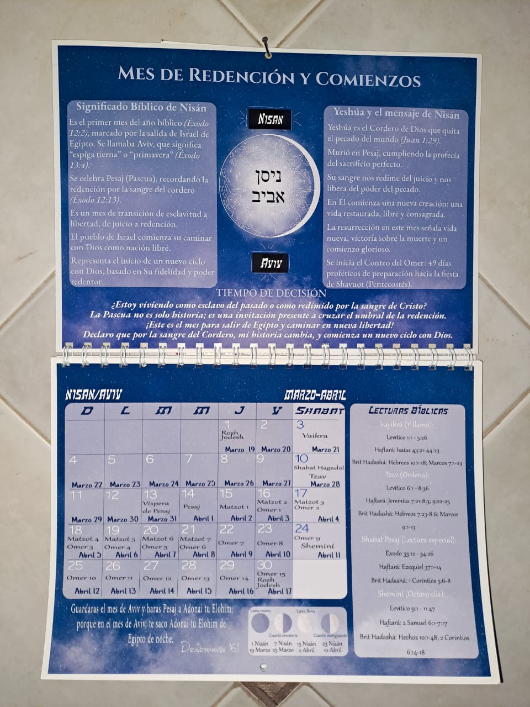

$10.000

Calendario 2026 en formato A4, anillado doble alambre, impreso en papel fotográfico de 180 g de alta calidad.
Incluye 14 hojas full color con excelente definición y tapas laminadas para mayor durabilidad.
Ideal para organización diaria, tener siempre a mano o colgar en la pared, combinando practicidad con un diseño inspirado en principios bíblicos.
Perfecto para uso personal o regalo.
Este calendario abarca un año bíblico completo, comenzando en el mes de Nisán (marzo 2026) y finalizando en Adar II (abril 2027), siguiendo el orden del calendario bíblico.
No solo te ayuda a planificar tu año, sino que también te acompaña espiritualmente, incluyendo las porciones de lectura semanales según el orden en que se estudia la Palabra en el pueblo hebreo (Torá, Profetas y Nuevo Testamento).
Además, incorpora las fechas bíblicas más importantes mencionadas en las Escrituras, junto con el significado espiritual de cada mes y la revelación de Yeshua en cada uno de ellos, brindando una guía para profundizar tu relación con Dios a lo largo del año.

✔ Tamaño A4 (21 x 29,7 cm)
✔ Papel fotográfico 180 g
✔ Tapas laminadas
✔ Anillado resistente
✔ Impresión full color
✔ Contenido bíblico y espiritual integrado
✔ Desde Nisán (marzo 2026) hasta Adar II (abril 2027)
Una herramienta pensada para vivir cada día con propósito, orden y conexión con la Palabra.